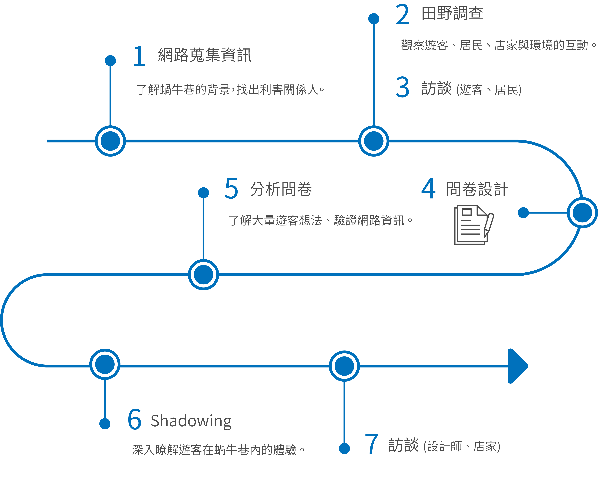
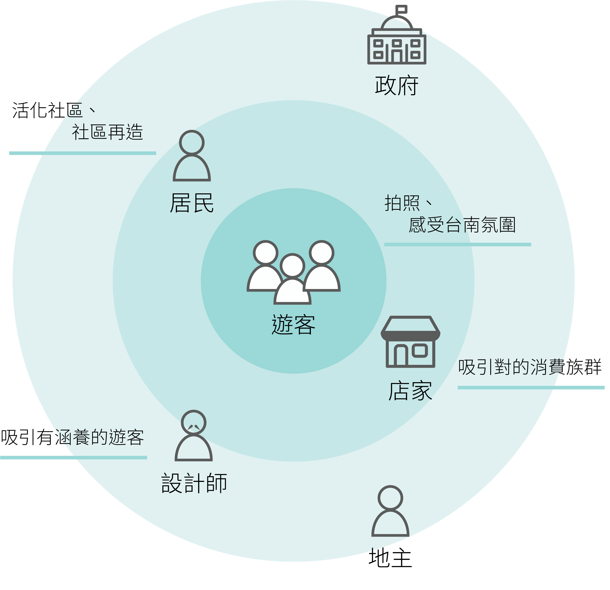
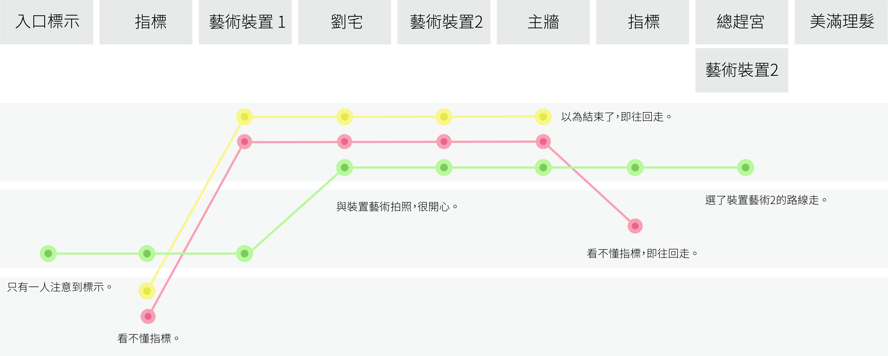

Design process: observe > discover > solve
Observe
Collect & Analyse Data
在網路蒐集資訊的時候，我們從臉書粉絲專業、部落格、Google景點評價等，試圖理解蝸牛巷在遊客們眼中的想法。透過文字雲，發現遊客最常使用的字為「巷弄」、「散步」、「拍照」、「裝置藝術」…等。瀏覽各個平台中的評論，發現其中有好心的遊客會在留言裡呼籲其他遊客「要保持安靜，以免打擾蝸牛巷的居民」。抓住這條線索，我們開始意識到蝸牛巷與其他觀光景點不同之處。
Field Research & Questionnaire
田野調查的過程中，我們發現蝸牛巷與其他觀光景點主要的差異源於此「藝術的場域與居民生活是互相結合的」。因此在設計時，必須特別留意這個模式帶來的利與弊。問卷能提供蝸牛巷的客群、遊客原本來到蝸牛巷的目的、遊客是否覺得蝸牛巷符合期望…等資訊。由於問卷是在當場給予遊客做填寫，我們也抓準機會訊問客人對於蝸牛巷的看法，進一步了解遊客的態度。
Interview
觀察的中間期，即進入訪談的階段。我們分別訪談了代表政府角色的設計師、遊客、居民與店家，四個在蝸牛巷主要的利害關係人。印象比較深刻的是與居民互動的時候，自我角色的呈現是很重要的。如果以「訪問者」的角色出現，居民通常擔心我們為政府單位而有所防備。因此，有時候會花一個下午的時間，漫步於巷弄或在店裡喝杯咖啡，與居民和店家以閒聊的方式認識蝸牛巷。
Discover
Stakeholders
經過前面資料的蒐集，我們簡單繪製出利害關係人與他們的目標。
在利害關係人的圖中，我們沒有採用將各個角色之間的關係拉出來，找出主要影響因子的方法。取而代之的是將角色的目標放入，因為在這個圖中，最主要的四個角色：遊客、居民、設計師與店家是呈現一個需要互相平衡的關係。考量蝸牛巷的發展，讓四個角色目標能夠被滿足，相互之間取得平衡與共識才是我們認為重要的要素。
目標的設立自然也有衝突的出現。設計師認為來蝸牛巷的遊客沒有認識到場域的歷史故事、葉石濤文學之美與感受台南巷弄文化等。店家則表示來到蝸牛巷的遊客多半非主要客群，無法帶動業績，還間接帶來髒亂。這些問題都代表著服務本身需要重新考量，而改良的同時注意各角色之間的平衡關係。
訪談的過程中，我們發現設計師是主導蝸牛巷發展的舵手，而他們自身也有對蝸牛巷的一套規劃。其實設計也可以採用漸進的方式，過程中同時理解服務對象的需求，而當將時間軸考量進來，一項服務就有更多的可能性。
Shadowing + Customer Journey Map
此部份我們運用一個技巧。我們先繪製出理想的(規劃的)顧客旅程地圖，再者繪製出遊客實際產生的顧客旅程地圖，最後將兩者相比，找出失效的接觸點。
在繪製顧客旅程地圖時，我們發現由於蝸牛巷入口很多，無法讓遊客統一一個路線，這也是許多接觸點可能被遺漏的原因。因此如果要讓遊客不要錯失任何一個裝置，就要加強蝸牛巷內的標示。然而，這樣追求清楚的指示會不會失去遊客在巷弄中漫步與迷路的體驗呢？這也是一個可以思考的問題。
Insights
- 1. 設計師與遊客間出現服務缺口，主要為設計師提供的內容無法達到設計師的目標。
- 2. 蝸牛巷被遊客視為「中繼站」。
- 3. 由於入口眾多，無法確切掌握遊客在蝸牛巷內的體驗。